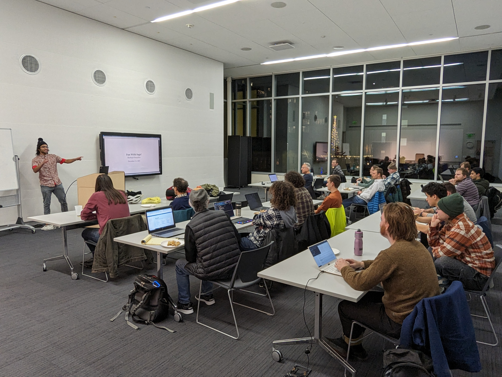

This talk will explore how to utilize open source Computer Algebra Systems such as SageMath and Macaulay2, which provide a convenient environment for doing complex computations and expose a Python interface to the user. Various interesting mathematical invariants will be studied, including the discriminant of a number field and p-torsion of elliptic curves.
Shashank Bangalore is a undergraduate mathematics student at UW-Madison with interests in algebraic geometry, arithmetic geometry, and number theory. He is also very interested in football (the real kind) and football analytics.